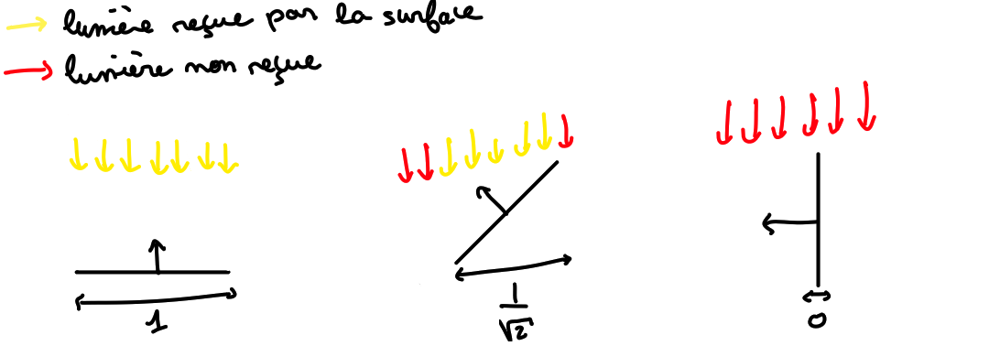
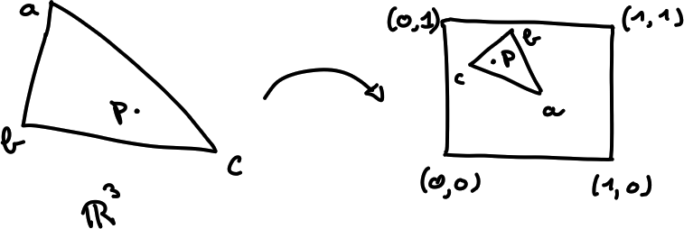

Introduction au shading
Dans ce petit article on va s'intéresser à la dernière étape du pipeline graphique: le calcul de la couleur finale d'un pixel. Cette opération est réalisée par le fragment shader, qui est un type de shader (c'est-à-dire de programme qui s'exécute sur la carte graphique) dont le travail est de calculer la couleur finale d'un pixel. Pour faire ce calcul on aura besoin de la position du point de la scène correspondant au pixel, de la normale en ce point, de la direction de la lumière ainsi que de sa couleur.
Notre objectif ici est d'apprendre à écrire des shaders basiques, et puis de voir comment coder quelques modèles de matériaux très simples.
Étape 1: couleur constante
Normalement vous devriez avoir un carré noir ainsi qu'un éditeur de code à droite de l'écran. L'éditeur devrait contenir le morceau de code suivant:
in vec3 Position;
in vec3 Normal;
uniform vec3 LightDirection;
uniform vec3 LightColor;
void main() {
vec3 finalColor = vec3(0., 0., 0.);
gl_FragColor = vec4(finalColor, 1.);
}Voilà notre shader qui affiche pour l'instant un écran noir. Il est écrit dans un langage qui s'appelle GLSL (pour OpenGL Shading Language) et qui ressemble à du C en termes de syntaxe.
Les 4 premières lignes commencent par les mots-clé in ou uniform: elle servent à déclarer que notre shader prend en paramètre quatre variables Position, Normal, LightDirection, LightColor qui sont toutes de type vec3 (un vecteur de dimension 3, qui est un type de base en GLSL)
Positioncontient la position du point du modèle correspondant à notre pixelNormalcontient le vecteur normal au modèle au point correspondant à notre pixelLightDirectioncontient la direction de la lumièreLightColorcontient la couleur de la lumière
Le travail de notre shader sera donc de calculer la couleur finale du pixel à partir de tous ces paramètres, et de le stocker dans la variable spéciale gl_FragColor
glFragColor est un vec4 (vecteur à 4 composantes) au format RGBA pour Red, Green, Blue, Alpha (= opacité). Toutes les composantes sont dans l'intervalle \([0, 1]\), donc vec4(0., 0., 0., 1.) représente du noir et vec4(1., 1.,1., 1.) du blanc. Pour que notre modèle soit composée d'une couleur unie il y a juste à choisir une couleur et à affecter gl_FragColor !

vec3(1., 0., 0.)
Étape 2: matériau diffus
Le modèle le plus simple de l'éclairage d'une surface est un matériau qui diffuse la lumière de manière uniforme dans toutes les directions. Ainsi les seuls paramètres qui ont un impact sur l'apparence d'un point de la surface sont son vecteur normal ainsi que la direction de la lumière. En effet, plus la surface fait face à la lumière, plus elle reçoit de lumière:

Sur ces schémas on voit que plus la normale est alignée avec la direction de la lumière, plus notre surface est éclairée. Or on a un outil bien pratique pour mesurer l'alignement de deux vecteurs: le produit scalaire. La quantité de lumière reçue est en fait proportionnelle à l'aire de notre surface projetée dans la direction inverse \(\mathbf{L}\) de la lumière, qui est elle-même proportionnelle au produit scalaire de la normale \(\mathbf{n}\) par \(\mathbf{L}\):

Cela nous donne la formule suivante pour calculer la couleur d'un point de normale \(\mathbf{n}\) éclairé par une lumière de direction \(-\mathbf{L}\): \[ \max(0, n \cdot L) \times \text{couleur de l'objet} * \text{couleur de la lumiere}\]
en notant \(*\) la multiplication composante par composante.En GLSL beaucoup d'opérations sur les vecteurs sont définies par défaut: l'addition et la multiplication par un scalaire bien sûr mais aussi:
- Le produit scalaire avec
dot(a,b) - La longueur d'un vecteur avec
length(v), ou encore la distance entre deux points avecdistance(a, b) - La normalisation avec
normalize(v) - La multiplication composante par composante avec
a * b(qui n'a pas trop de sens pour des vecteurs ou des points, mais très utile pour manipuler des couleurs)

vec3(1., 0., 0.)
Étape 3: Texture
Pour l'instant notre sphère est d'une couleur unie, ce qui d'un point de vue visuel est assez peu intéressant. La manière classique pour ajouter des détail est d'utiliser une texture comme couleur de base plutôt qu'une couleur fixe, et c'est ce qu'on va faire dans cette partie. Avant ça j'aimerais juste expliquer rapidement comment on se ramène de notre modèle en 3D à une texture 2D. Plus précisément: j'ai un point sur mon modèle 3D, comment savoir quel pixel de ma texture je dois lui assigner ?
La première étape est pour celui qui crée le modèle 3D: celui-ci doit assigner à chaque sommet une position dans le carré \([0, 1]^2\). Autrement dit, à chaque triangle du modèle on fait correspondre un triangle dans la texture.

Ensuite pour trouver la position dans la texture de n'importe quel point du modèle, on a juste à interpoler entre les positions des sommets de son triangle. En fait on a pas à se précoccuper de faire l'interpolation, elle se fait automatiquement et le shader reçoit directement les coordonnées interpolées dans \([0, 1]^2\). C'est néanmoins là que se situe la différence entre les mots-clés in et uniform:
indéfinit un attribut dont la valeur est donnée pour tous les sommets, et que l'on interpole entre les sommets. Ici cela correspond à la position, à la normale et aux coordonnées sur la textureuniformdéfinit un paramètre qui ne dépend pas du pixel considéré. Par exemple, la direction et la couleur de la lumière ne varient pas entre les pixels.
Maintenant on va voir comment lire une texture depuis notre shader. Avant de pouvoir faire ça il faut bien sûr charger la texture mais ce n'est pas au shader de s'en occuper et ici j'ai déjà fait le nécessaire. On va donc ajouter un morceau de code au début du shader pour pouvoir accéder à ces nouveaux paramètres dont on a besoin:
uniform sampler2D WoodTexture; // notre texture
in vec2 TextureCoords; // coordonnées dans la texture du point considéréPour lire le pixel de coordonnées TextureCoords dans la texture WoodTexture on utilise la fonction texture:
vec3 baseColor = texture(WoodTexture, TextureCoords).rgb; // on ne s'intéresse pas à la 4e composanteEn multipliant cette couleur par le produit scalaire comme à l'étape précédente j'obtiens le résultat suivant:
Ça casse pas trois pattes à un canard, mais c'est quand même plus sympa qu'une sphère unie.
J'espère que ça vous a plu, si vous avez des remarques ou des questions n'hésitez pas à m'en faire part !
Je vous mets mon code pour les 3 étapes pour vous aider si vous êtes bloqués (n'hésitez pas à poser des questions sinon):
Étape 1
in vec3 Position;
in vec3 Normal;
uniform vec3 LightDirection;
uniform vec3 LightColor;
void main() {
vec3 finalColor = vec3(1., 0., 0.);
gl_FragColor = vec4(finalColor, 1.);
}Étape 2
in vec3 Position;
in vec3 Normal;
uniform vec3 LightDirection;
uniform vec3 LightColor;
void main() {
vec3 finalColor = max(0., dot(Normal, -LightDirection)) * vec3(1., 0., 0.);
gl_FragColor = vec4(finalColor, 1.);
}Étape 3
in vec3 vPosition;
in vec3 Normal;
in vec2 TextureCoords;
uniform vec3 LightDirection;
uniform vec3 LightColor;
uniform sampler2D WoodTexture;
void main() {
vec3 finalColor = dot(Normal, -LightDirection) * texture(WoodTexture, TextureCoords).xyz;
gl_FragColor = vec4(finalColor, 1.);
}